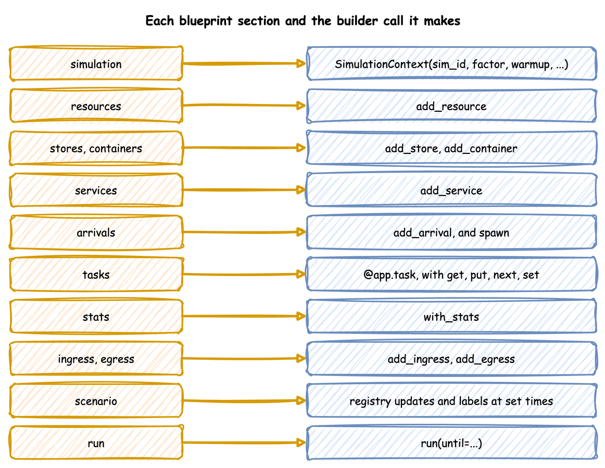

YAML Format
Every key a blueprint accepts, section by section. YAML Blueprints describes how a file is read and where an error points, and each User Guide page shows its keys in use.
Every section is optional except simulation. Unknown keys are refused, so a misspelt key is reported with its line rather than ignored. A time is seconds or a duration such as 10 min, and an instant is now, a signed duration such as -1d, or an ISO datetime. ${VAR} and ${VAR:-default} read environment variables anywhere in the file. YAML Keys lists the same keys with their types and defaults, generated from the JSON Schema at https://jaehyeon.me/desflow/latest/schema/blueprint.schema.json, which Set Up Your Editor uses.
Each section becomes one builder call:

A blueprint with logic in Python beside it, which the sections below refer to:
simulation
The arguments of SimulationContext. Time and Pacing describes the clock.
| Key | Value |
|---|---|
sim_id |
required; the first part of every registry path and statistic name |
factor |
1.0 follows the wall clock, 0 does not wait; 1.0 by default |
random_seed |
a whole number; without one, the run draws a seed and logs it |
logical_start_time |
the instant simulation time 0 maps to; the load time by default |
go_live_at |
the instant from which the run is paced in real time |
warmup |
a time, 0 or more, before which no sink receives a record and at which the statistics restart |
initial_time |
the simulation clock's reading when the run starts, in seconds or a duration; 0 by default |
timezone |
an IANA name, such as Australia/Melbourne, that timestamps are written in, with their offset; a logical_start_time or go_live_at without an offset, and now, are read in it; the zone of logical_start_time, or UTC, by default |
lag_interval |
simulation seconds or a duration between system.simulation.lag_seconds readings; 0 turns them off; by default off at factor: 0 and every second otherwise |
strict |
true raises RuntimeError when a paced step is more than factor seconds behind the wall clock, as SimPy's RealtimeEnvironment(strict=True) does; false by default, and never checked at factor: 0 |
environment |
a !python reference to a subclass of DynamicRealtimeEnvironment the model runs on; the subclass's __init__ takes **kwargs and passes them on |
resources, stores and containers
name: {...} entries. Resources and Stores and Containers describe them.
| Section | Keys |
|---|---|
resources |
current_cap and max_cap, whole numbers or .inf for no limit, both optional: current_cap is 1 and max_cap is current_cap (an entry {} is one unit); queue: fifo (the default), lifo or priority; queue_limit, the most requests that may wait, 0 or more (none by default); type: !python module.Class, a subclass of ResourceBase to build the resource from; preempt: true lets a lower priority value take a busy unit, with queue: priority; breakdown: {time_to_failure, repair, work}, two distributions and interrupt (the default) or finish, makes it fail and be repaired |
stores |
current_cap and max_cap, whole numbers of items or .inf for no limit, both optional: current_cap is max_cap if given and no limit if not, and max_cap is current_cap; priority: true to return the lowest priority first, by any value that orders, such as a number, text, a date or a list; items, the items held at the start, [priority, item] pairs for a priority store; type: !python module.Class, a subclass of StoreBase to build the store from, which cannot be combined with priority |
containers |
current_cap and max_cap, the largest amount or .inf for no limit, both optional as for a store; level, the amount at the start, 0 by default; type: !python module.Class, a subclass of ContainerBase to build the container from |
A store and a container cannot share a name.
signals
A list of names, each a signal that tasks fire with signal and wait for with wait: {signal: name}. Signals and Waiting describes them.
A signal may also be written as a mapping, {name: {once, on}}, with the list form still accepted:
| Key | Value |
|---|---|
once |
true makes the signal fire once, as SimPy's Event does: it does not re-arm, a wait after the firing resumes at once, and a second firing is refused |
on |
a list of actions run when the signal fires, in the same form as a task's on |
variables
name: value entries, any YAML value, each at the registry path <sim_id>.variables.<name>. Live Parameters describes them.
services and arrivals
name: {dist, ...} entries: a distribution family and the parameters it takes. Time-valued parameters take durations, and rate is per second. Arrivals and Services shows each family, and Reference, Distributions lists their parameters and rules.
An arrival also takes:
| Key | Value |
|---|---|
spawn |
the task each arrival starts |
attributes |
a mapping each new entity starts with, read as attr.<name> |
replay |
in place of a distribution: {path, time, unit, fields, on_invalid}, a CSV or Parquet file relative to the blueprint whose rows arrive at their times; unit is ms, s (the default), min, h or timestamp, fields a list of columns or all (the default), on_invalid error (the default) or skip. Arrivals and Services describes it |
tasks
name: {...} entries, each built with @app.task. Tasks and Processes and Task Flow describe them.
| Key | Value |
|---|---|
service |
the service whose time the task takes; needed with a resource |
resource |
the resource the task holds while it works, or a list of them, acquired in the order listed |
keep |
resources in resource handed to the next task, which releases them once it starts |
payload |
required: the finished event's value, a mapping, or a !python function called as function(task_id, context) |
id_field |
adds the task id to a mapping payload under this key |
item_field |
adds the item the task's store get took to a mapping payload under this key |
attributes |
a list of entity attributes added to a mapping payload |
priority |
a number or an expression such as attr.tier, for a resource with queue: priority |
patience |
seconds, a duration or an expression: how long the task may wait for its wait, its resource and its get, all together, before it leaves and publishes reneged; it pauses while the task is served |
balk |
a condition checked before the task joins a queue; when it holds, the task publishes balked |
wait |
what the task waits for before its resource: a leaf {signal: name}, {task: name}, {timeout: ...} (seconds, a duration, or {after, value} where value reaches the waiter), {condition: ...}, {request: name} (a resource unit), {get: {...}} or {put: {...}} (a store or container), or {running: {task, where}} (the running instances of a task); or a group {any: {name: branch, ...}}, {all: {...}} or {at_least: n, of: {...}}, which nest; read after it as wait.<branch>.done, .ok and .value |
signal |
a signal under signals the task fires with its payload when it finishes, and fails when it fails |
spawn |
{task, after}: on success the task starts task as a new entity keyed <task>-n, with its own key and attr.parent the spawning entity's key, after an optional after delay |
subscribe |
a wait branch such as {task: name} or {running: {...}}: the task is interrupted when that event happens, with the cause {event, value} |
on |
a list of actions run on every end of the task: each {fire: {signal, value, from}}, {spawn: {task, after}}, {interrupt: {task, where, cause}}, or a {path, value} registry change. A fire action takes a literal value, or from (the field from_), a signal or task name whose last outcome it copies, not both, and, for a signal with once: true, urgent: true to resume the waiters before the other events at their time and after (above 0, a number or a duration) to fire it that long from now |
fail |
a condition checked after the service, reading the task's own payload; when it holds the task publishes failed |
fail_reason |
the reason a failure publishes; the fail condition's text by default |
on_fail |
the task a failed instance goes to; without it the flow ends |
on_interrupt |
resume (the default), restart or abandon: what an interrupt or a preemption does |
on_interrupt_next |
the task an abandoned instance goes to |
preempt |
false keeps the task's requests from preempting; true by default |
interrupt |
{task, where, cause}: when the task finishes, interrupts every running instance of task whose where holds |
get |
{container: name, amount: ...} or {store: name}, with an optional filter condition for a store, which reads the item offered as item.<field>, and an optional wait: false to make the request and go on at once, granted when it can be, first in first out, and whose item the task does not get: taken after the resource, before the work |
put |
the same form, without a filter: added after the work; a store receives the payload, with an optional priority for a priority store and an optional wait: false to make the request and go on at once, granted when it can be, first in first out |
next |
a task name; {when: [{condition, task}, ...], default: task}; or {weights: {task: number, ...}} |
set |
a mapping applied to the entity's attributes when the task finishes |
An amount is a number or an expression, 1 when left out. A task with a service and no resource is a timed step; one with neither, and no get, takes no time.
processes
A list of !python generator functions, each written as {function: ..., kwargs: {...}} or as the bare reference, started as function(context, **kwargs); Python in a Blueprint shows them.
telemetry
A list of custom readings, each {interval, function}: every interval simulation seconds, greater than 0, function(context) is called and publishes with context.publish. The built-in readings of resources, stores and containers come from stats instead.
| docs/snippets/yaml/telemetry.yaml:telemetry | |
|---|---|
stats
The built-in statistics, as a level, stats: basic, or as a mapping, stats: {level: all, interval: 1 min}. The level is none, minimal, basic, typical or all, and the interval, 10 seconds by default, is a time greater than 0. Statistics describes them.
scenario
A list of steps, applied in time order on the simulation clock:
| Key | Value |
|---|---|
at |
the time of the step |
path |
a registry path, checked when the file loads; needs a value |
value |
the new value, which must convert to the type the path holds |
record |
a mapping, published as a ground-truth label to the when: labels sinks |
interrupt |
{task, where, cause}: interrupts every running instance of task whose where holds |
A step needs a path and value, a record, an interrupt, or more than one. A step applies before every other event at its time; steps at the same time apply in the order written; a step at or after until never applies. Live Parameters shows scenarios and labels, and Time-varying Arrivals the boundaries.
ingress and egress
Lists of connectors, each with a type and a config of the constructor's keyword arguments. type is one of the short names below, or a !python class from another package. A connector's module is imported only when a blueprint names it, so a blueprint that uses Kafka does not need the PostgreSQL driver; a missing package stops the load with its line and the pip install command, except Parquet and JSON Lines, which import PyArrow when they start writing.
| Direction | type |
Class | Extra |
|---|---|---|---|
| ingress | Local |
LocalIngress |
none |
| ingress | Kafka |
KafkaIngress |
kafka |
| ingress | Postgres |
PostgresIngress |
postgres |
| ingress | Redis |
RedisIngress |
redis |
| egress | Console |
ConsoleEgress |
none |
| egress | Kafka |
KafkaEgress |
kafka |
| egress | Parquet |
ParquetStorageEgress |
parquet |
| egress | Jsonl |
JsonlStorageEgress |
parquet |
| egress | Iceberg |
IcebergStorageEgress |
iceberg |
| egress | Postgres |
PostgresEgress |
postgres |
| egress | Redis |
RedisEgress |
redis |
An egress entry also takes when: history or live, both needing simulation.go_live_at, labels, or a !python function of one record; and batch_size and flush_interval, both greater than 0. Ingress and Egress describe them.
Settings that the Python API takes as objects are plain values:
type |
Setting | Plain value |
|---|---|---|
Kafka |
topics | Without a topic_router, event_topic and telemetry_topic are created when the run starts, with one partition each, if they do not exist. |
Parquet, Jsonl |
filesystem |
A mapping. type is local (the default) or s3, and the other keys are passed to PyArrow's S3FileSystem, such as endpoint_override, access_key, secret_key and region. An endpoint_override starting with http:// sets the scheme. A key whose value is empty is left out. |
Parquet, Jsonl |
default_path |
Without a path_router, each event is written there as one flat row, with its value mapping unpacked into columns, and telemetry is left out. It is a file name prefix, not a folder: each batch is a file of its own, named as Egress explains. |
Iceberg |
catalog |
A mapping of PyIceberg catalog properties, such as type, uri, warehouse and s3.endpoint, passed to load_catalog on the first write. An optional name key names the catalog. |
Iceberg |
default_table, schemas |
Without a table_router, each event is written to default_table as one flat row. schemas maps a table to its columns, each with a type: string, int, long, float, double, boolean, timestamp, timestamptz, date or binary. |
Postgres |
tables |
Tables created when the run starts, if they do not exist. Each maps to columns, a mapping of column name to SQL type, and an optional primary_key. table_name defaults to the table when tables names one. |
An ISO time string bound for a timestamp or date column of Iceberg or PostgreSQL is converted before the write.
batching
The arguments of with_batching, the defaults for every sink: batch_size and flush_interval, and optionally max_queued_batches and drain_stall_seconds, all greater than 0. Egress describes them.
run
| Key | Value |
|---|---|
until |
a time greater than initial_time; desflow run --until overrides it |
stop |
ends the run before until when it happens: {signal: name}, the next firing of a signal, or {condition: ...}, the first moment a condition holds |
drain |
true stops the arrivals at until and runs on until no entity is left; {limit: 1 h} stops at the latest that long after until; desflow run --drain sets it |
on_unhandled_failure |
continue (the default) defuses a task, child flow or one-shot signal failure nobody handles, so the run goes on; stop lets such a failure stop the run, as plain SimPy does |
before |
a list of !python functions called with no arguments before the run, for setup such as creating topics |
Include a File
!include path puts a mapping from another YAML file in place, with the path relative to the file that names it, such as the settings desflow fit writes: packing: !include fitted/packing.yaml. !include {file: path, spawn: pack} adds keys to the file's mapping, such as the task an arrival spawns. The file is read with the same loader, so ${VAR}, !python and !include work in it, and a file that includes itself, directly or through another, is refused. Input Fitting shows it.
Security
A blueprint with no !python references is read entirely by yaml.SafeLoader, and loading it imports only the connector modules its type entries name; an !include reads another YAML file the same way and imports nothing itself. A file that references Python, directly or in a file it includes, runs the imports it names, so it is as trusted as a Python script: run blueprints from people you would take a script from. Python in a Blueprint explains.